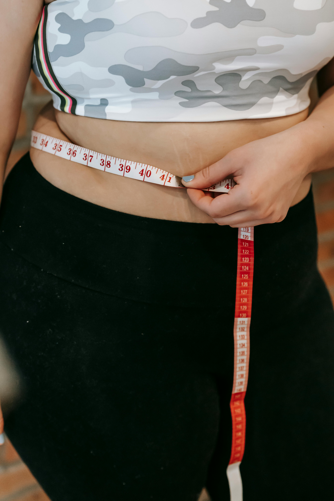

O que é o Emagrecer Permanente?
Um guia prático e digital com um aplicativo auxiliar que ajuda você a reprogramar sua mente, mudar seus hábitos e conquistar um corpo saudável de forma natural e definitiva.
Você Vai Receber:
- 📘 Guia passo a passo para emagrecer com saúde
- 📱 Aplicativo auxiliar para acompanhar sua rotina alimentar
- ✅ Estratégias psicológicas para controlar a ansiedade
- 🍽️ Dicas de alimentação inteligente sem sofrimento
Quero Começar Agora
Bônus Exclusivos
- 🎁 E-book de receitas saudáveis e econômicas
- 🎁 Checklist diário para manter o foco
- 🎁 Áudios de motivação e foco
Depoimentos Reais
Mariana, 32 anos: “Esse guia me salvou. Já tinha tentado de tudo. Hoje perdi 9kg e sigo firme!”
Fernanda, 26 anos: “Com o app ficou muito mais fácil manter o foco e organizar minha alimentação.”
Juliana, 40 anos: “Amei! O melhor investimento que fiz na minha saúde.”
Perguntas Frequentes
Preciso fazer academia?
Não! Você pode começar com caminhadas ou atividades leves em casa.
Funciona para quem já tentou de tudo?
Sim. O método atua no comportamento e não depende de dietas milagrosas.
Não Deixe Para Depois
O primeiro passo para o emagrecimento verdadeiro é sair da zona de conforto.
Acessar Agora